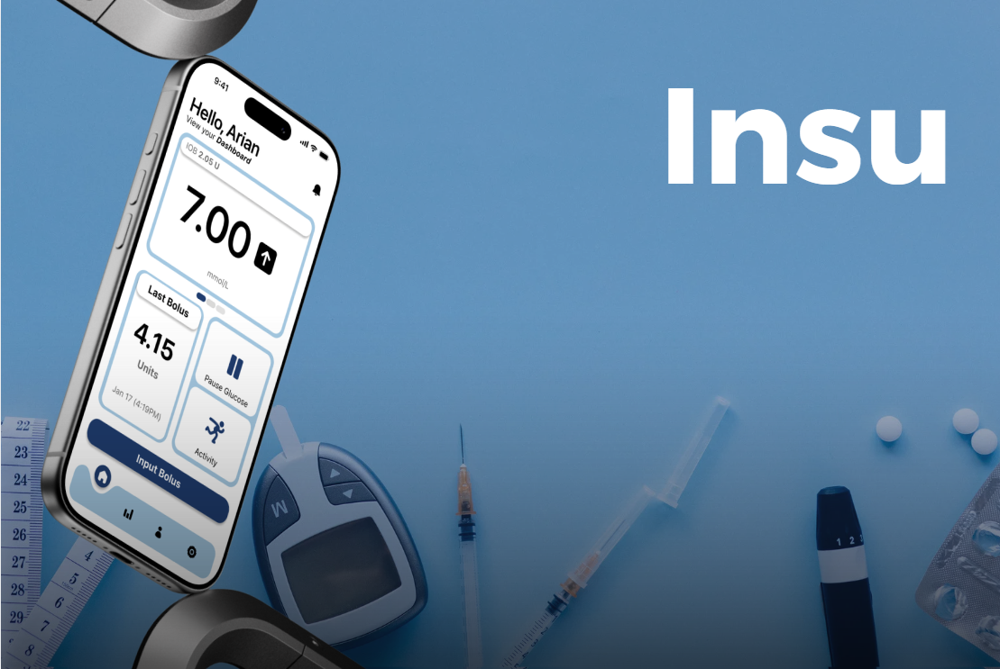
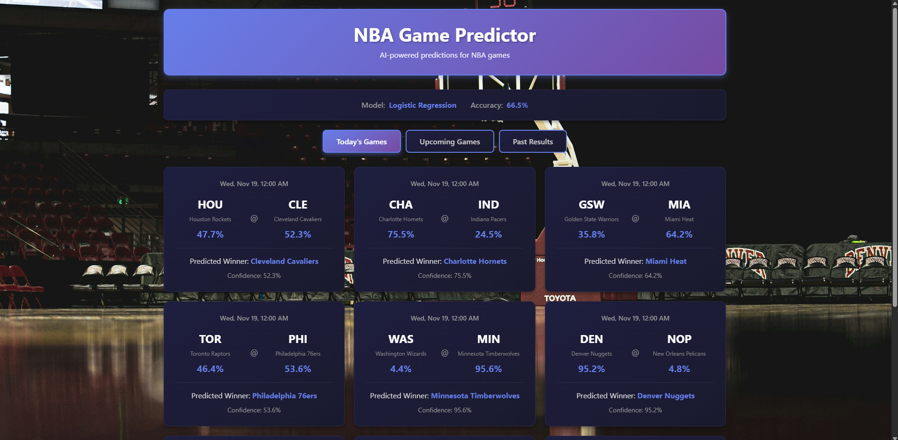
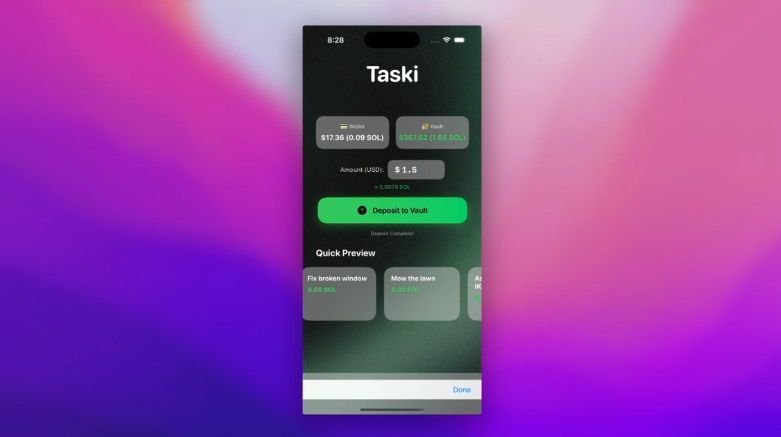
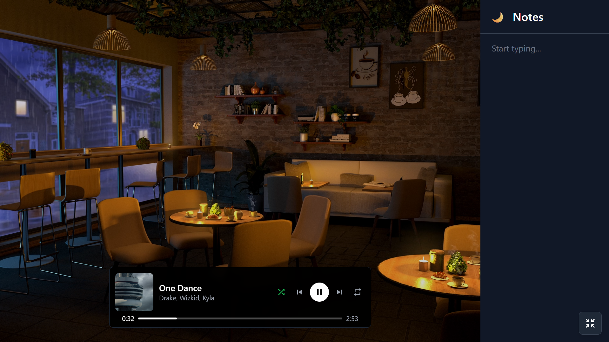

projects

closed-loop "artificial pancreas" for the 2.5M+ north americans with type 1 diabetes. bluetooth drivers for omnipod pumps + dexcom cgms, apple healthkit, and gemini vision for carb estimation from photos.

mobile-first study hub where waterloo students join course chats, share attachments, and manage study groups. built on supabase realtime with rls policies and edge triggers.
python scanner analyzing github commit history via gh archives for leaked credentials. shannon-entropy detector found 2000+ unknown patterns; gemini false-positive filter cuts noise by 90%+. alerted 500+ devs to real leaks.

full-stack ml app predicting nba game outcomes at 70% accuracy. logistic regression + random forest on 4,000+ historical games, 31 engineered features per game. fastapi serves predictions with <100ms inference latency.
medical education platform for ai-driven patient simulations and diagnostic scoring. 150+ synthetic cases with multi-branch encounters powered by gemini, plus real-time performance dashboards on supabase auth.

native ios marketplace bridging household tasks with solana. ai-powered completion verification via gemini, smart vault escrow for secure payments, and instant crypto payouts over low-level solana rpc.

all-in-one study dashboard with spotify playback over oauth 2.0, a notion-style rich text editor with auto-save, and an animated background — all in a clean split-screen layout.